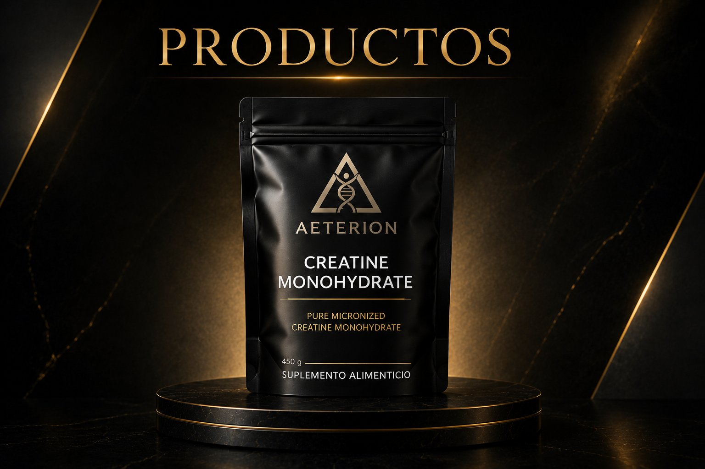
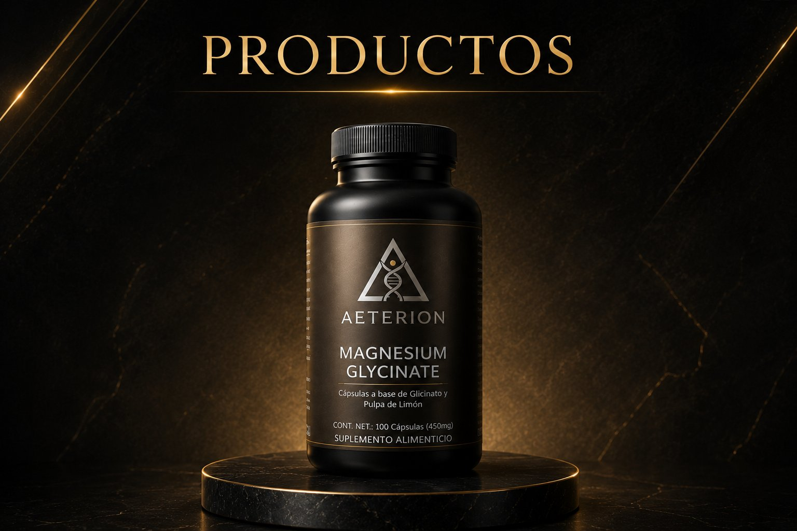
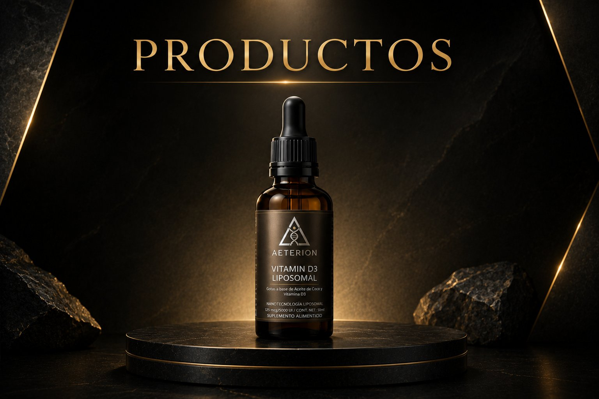
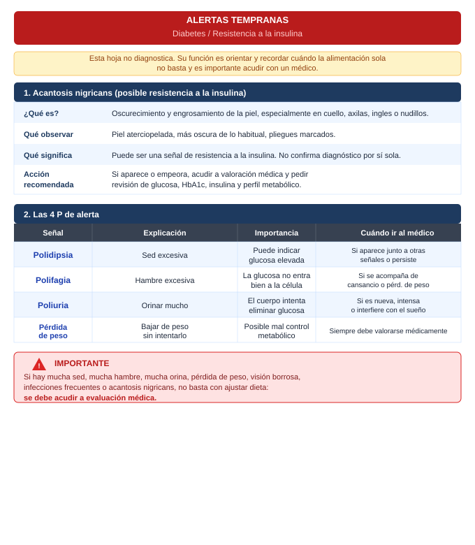

Optimización humana basada en ciencia
En un mercado saturado de promesas vacías, Aeterion nace con un enfoque distinto: precisión, evidencia y resultados reales. Cada formulación construida con un propósito claro.
"El cuerpo humano no necesita más productos. Necesita mejores decisiones."
Aeterion nace como respuesta a un problema evidente: la desinformación, la baja calidad y la falta de coherencia en la industria de la salud. Desarrollamos sistemas simples, funcionales y respaldados por evidencia.
Solo lo que tiene evidencia de alta jerarquía: RCTs, meta-análisis, revisiones sistemáticas.
Cada producto responde con honestidad para quién tiene sentido y para quién no lo tiene.
Productos, protocolos y guías que se conectan. No elementos aislados sin coherencia.
Cómo rindes, cómo te recuperas, cómo funcionas hoy y cómo envejeces mañana.
El cliente no compra productos aislados. Entra a un sistema simple de decisiones diseñado para todas las personas: principiantes, avanzados, jóvenes y adultos mayores.
Rendimiento y enfoque
Lo que impulsa tu rendimiento físico, enfoque mental, capacidad de esfuerzo y disponibilidad diaria. El combustible que el cuerpo necesita para funcionar en su nivel más alto.
Descanso y sistema nervioso
Lo que regula tu descanso profundo, el equilibrio del sistema nervioso, la recuperación muscular y la adaptabilidad al estrés físico y mental del día a día.
Salud general y equilibrio
Lo que sostiene las funciones básicas del organismo, la salud general a largo plazo, la consistencia inmunológica y el equilibrio que permite seguir rindiendo con los años.
Solo lo que tiene evidencia real, una razón de uso clara y un perfil de seguridad sólido. Si un suplemento no pasa ese filtro, no está aquí.

Más estudiadoProtocolo 01 — Energía
El suplemento más estudiado en la historia de la ciencia deportiva. Más de 500 estudios publicados. Clasificado por el ISSN como el suplemento ergogénico más efectivo y seguro disponible.

Alta absorciónProtocolo 02 — Recuperación
Cápsulas a base de glicinato y pulpa de limón. 100 cápsulas · 450mg. La forma de magnesio con mayor biodisponibilidad y mejor tolerancia gastrointestinal, respaldada por evidencia clínica sólida.

NanotecnologíaProtocolo 03 — Bienestar
Gotas a base de aceite de coco y vitamina D3. 125 mcg · 5000 UI · 50 ml. Tecnología liposomal para máxima absorción. La vitamina D actúa como hormona regulando más de 200 genes.
Cada producto Aeterion es analizado por el Centro de Investigación para el Desarrollo Industrial (CiDi) bajo normatividades NOM, FEUM y USP43. La confianza no se declara — se demuestra.
Mesófilos aerobios, hongos, levaduras y coliformes. Garantiza que el producto está libre de microorganismos que afecten la salud.
Arsénico, mercurio, plomo y cadmio. Método FEUM. Los ingredientes naturales pueden absorber minerales tóxicos del suelo.
NMX-AA-051 / HPLC / USP43. Verifica que la concentración real del ingrediente activo coincida con lo declarado.
Creatine Monohydrate 200 Mesh · Lote 20240830 · Caducidad AGO 2026
Certificado de Análisis emitido bajo estándares USP43 y HPLC. Pureza verificada al 99.97%. Todos los indicadores microbiológicos negativos.
| Análisis | Límite máximo | Resultado | Interpretación |
|---|---|---|---|
| Conteo Bacteriano Total | ≤ 100 cfu/g | < 50 cfu/g | ✓ Cumple |
| Moho & Levaduras | ≤ 100 cfu/g | < 50 cfu/g | ✓ Cumple |
| E. Coli | Negativo/10g | Negativo | ✓ Cumple |
| Salmonella | Negativo/25g | Negativo | ✓ Cumple |
| S. aureus | Negativo/10g | Negativo | ✓ Cumple |
| Análisis | Especificación | Resultado | Interpretación |
|---|---|---|---|
| Metales Pesados (total) | ≤ 0.5 ppm | < 0.5 ppm | ✓ Cumple |
| Arsénico (As) | ≤ 0.1 ppm | < 0.1 ppm | ✓ Cumple |
| Plomo (Pb) | ≤ 0.1 ppm | < 0.1 ppm | ✓ Cumple |
| Mercurio (Hg) | ≤ 0.1 ppm | < 0.1 ppm | ✓ Cumple |
| Pureza (Assay) | 99.5–102% | 99.97% | ✓ Cumple · USP43/HPLC |
| Creatinina (impureza) | ≤ 100 ppm | 32 ppm | ✓ Cumple |
| DCD (Dicyandiamide) | ≤ 50 ppm | 30 ppm | ✓ Cumple |
A cualquier hora del día, con o sin alimentos. La consistencia diaria es más importante que el momento. Mantener buena hidratación.
Glicinato de Magnesio · Lote V25093 · Caducidad 03/11/2027 · No. Muestra: 13193-2
Certificado emitido por CiDi. Responsable: QFB. Alma Angélica Sánchez Llamas. El resultado de potencia supera lo declarado en etiqueta: 117.8% vs 88.8% declarado.
| Análisis | Límite máximo | Resultado | Interpretación |
|---|---|---|---|
| Mesófilos aerobios | < 10,000 UFC/g | 10 UFC/g | ✓ Cumple |
| Hongos | < 1,000 UFC/g | No detectable | ✓ Cumple |
| Levaduras | < 1,000 UFC/g | No detectable | ✓ Cumple |
| Coliformes totales | Ausencia/g | Ausencia/g | ✓ Cumple |
| Análisis | Resultado | Método | Interpretación |
|---|---|---|---|
| Metales pesados (total) | Menor a 10 ppm | FEUM 13.0 pág. 458 | ✓ Cumple |
| Ingrediente | Declarado en etiqueta | Resultado real | Interpretación |
|---|---|---|---|
| Magnesio elemental | 88.8% | 117.8% | ✓ Supera lo declarado |
Preferentemente 30–60 minutos antes de dormir. Con o sin alimentos. Cápsula vegetal. Totalmente vegano.
Vitamina D3 Liposomal · Lote LU250283 · Caducidad 14/11/2027
Certificado emitido por CiDi. Responsable: QFB. Edgar Omar Curi Vargas. Cuatro indicadores microbiológicos: todos No detectable — el mejor resultado posible.
| Análisis | Límite máximo | Resultado | Interpretación |
|---|---|---|---|
| Mesófilos aerobios | < 10,000 UFC/g | No detectable | ✓ Cumple |
| Hongos | < 1,000 UFC/g | No detectable | ✓ Cumple |
| Levaduras | < 1,000 UFC/g | No detectable | ✓ Cumple |
| Coliformes totales | Ausencia/g | Ausencia/g | ✓ Cumple |
Con la comida principal. La formulación liposomal no requiere grasa adicional. Sabor limón natural. 50ml por frasco.
Estamos construyendo algo más grande. Esto es solo el inicio de un sistema que seguirá creciendo con el mismo estándar de calidad y evidencia.
Próximos lanzamientos
Visión a largo plazo
Adaptógenos, nootrópicos y superfoods con el mismo estándar de evidencia que define a Aeterion.
Cosméticos naturales, dermatológicos y perfumes de alta calidad. Productos biodegradables con compromiso ambiental.
Herramientas inteligentes de seguimiento, educación y personalización. Siempre con un enfoque responsable y orientado a decisiones mejor informadas.
Estamos construyendo un plan de distribución para personas con una comunidad, gimnasio, farmacia o centro deportivo que quieran generar ingresos extra con Aeterion. Deja tus datos y te contactamos cuando esté listo.
"Estate pendiente de los nuevos productos, cambios y fecha estimada de lanzamiento."
También puedes dejarnos tu recomendación de algún producto que desees ver con la marca Aeterion.
Todo respaldado por evidencia científica de alta jerarquía. Regístrate para acceder al contenido completo: programas descargables, protocolos avanzados y comunidad.
Push/Pull/Legs + Upper + Legs&Arms. Hipertrofia con periodización ondulante, doble progresión y calculador de nivel integrado.
Full Body + Superior + Inferior. Ideal para quienes no pueden comprometer 5 días. Misma base de evidencia, diferente frecuencia.
Programa específico para mujer con enfoque en glúteos, core y patrones de fuerza adaptados a la fisiología femenina.
Sistema integral de 12 meses · 3 niveles. Fuerza máxima, explosiva, pliometría, isométricos de élite y periodización por bloques.
Sistema personalizable de macros. Ingresa tus datos y obtén tu plan ajustado a pérdida de grasa, mantenimiento o ganancia muscular. Incluye guía alimentaria y equivalencias.
Protocolo nutricional para control glucémico basado en la American Diabetes Association. Equivalencias de carbohidratos y guía alimentaria detallada.
Protocolo basado en la dieta Low FODMAP para síndrome de intestino irritable. Listas de alimentos permitidos y guía de reintroducción gradual.
Protocolo de 60–90 días basado en evidencia de alta jerarquía. Tres fases: eliminar disruptores, aportar materiales de reparación y repoblar el microbioma. Incluye protocolo para distensión abdominal y SIBO.
Protocolo basado en revisiones sistemáticas y meta-análisis para optimizar testosterona de forma natural. Nutrición, sueño, ejercicio y suplementación con evidencia.
Evidencia actual sobre senescencia celular, telómeros, autofagia y las intervenciones con mayor respaldo científico para frenar el envejecimiento biológico.
70+ actividades prácticas con evidencia científica (TCC, DBT, mindfulness). Herramientas de regulación emocional, diarios reflexivos y retos de 21 días.
Aceites y grasas, ultraprocesados, sueño, ambiente, salud oral, microbioma intestinal, ayuno intermitente, movimiento, tóxicos del hogar. Todo respaldado por evidencia científica real.
Regístrate gratis para descargar todos los programas, protocolos y guías. Sin costo, sin tarjeta.
Cocina mexicana, ensaladas, recetas saludables y snacks. Todo con ingredientes reales, fácil de preparar y con macros calculados.
Clásico nutritivo con tomate, cebolla y chiles serranos. Rápido, sabroso y lleno de proteína.
Proteína completa, fibra y grasas saludables. Perfecta como plato principal o acompañamiento.
Lentejas cocidas, jitomates cherry, aceitunas kalamata y pepino con aderezo de limón y oliva.
Camarones cocidos en limón, tomate, pepino y pico de gallo. Alto en proteína, bajo en grasa.
Guía completa de snacks con macros. Para entre comidas, pre o post entreno, sin culpa.
La biblioteca completa. Desayunos, comidas, cenas y postres con información nutricional detallada.
Regístrate gratis para acceder y descargar todas las colecciones.
Guía completa basada en meta-análisis y revisiones sistemáticas. Todo lo que impacta tu salud, explicado con honestidad y precisión.
Los mejores, los peores y la relación omega-6/omega-3
El aceite con mayor evidencia cardiovascular. Rico en ácido oleico y polifenoles antiinflamatorios. El estudio PREDIMED (7,447 participantes) demostró reducción del 30% en eventos cardiovasculares. Usar en frío o a baja temperatura para preservar los polifenoles.
Rico en triglicéridos de cadena media (MCT). Estable a altas temperaturas — bueno para cocinar. El debate sobre su impacto en el LDL sigue abierto. Usar con moderación como complemento, no como base.
Rico en ácido oleico, fibra, potasio y vitamina E. Uno de los alimentos con mejor perfil de grasas saludables completo. Aumenta la absorción de carotenoides de otros alimentos cuando se come junto a ellos.
La dieta occidental moderna tiene una relación omega-6/omega-3 de 15:1 a 20:1. La relación óptima es 4:1 o menos. El exceso de omega-6 (aceites de girasol, maíz, soja) compite con el omega-3 en las mismas vías metabólicas y promueve la inflamación crónica.
Reducir aceites de semillas refinados (girasol, maíz, soja, canola) · Aumentar omega-3 (pescado azul 2–3 veces/semana, nueces, semillas de chía/lino) · Suplementar con omega-3 si la dieta no lo permite.
Las más dañinas. Se forman por hidrogenación parcial de aceites vegetales. Aumentan el LDL, disminuyen el HDL y promueven la inflamación. La OMS estableció el objetivo de eliminarlas globalmente para 2023. Buscar "aceite vegetal parcialmente hidrogenado" en etiquetas.
El aceite de girasol, maíz y soja a altas temperaturas produce aldehídos y compuestos oxidados. Para cocinar a alta temperatura: aceite de aguacate (punto de humo 270°C), ghee o aceite de coco. Para ensaladas: oliva virgen extra.
La clasificación NOVA y lo que dice la evidencia real
Frutas, verduras, carne fresca, huevos, leche, legumbres, granos enteros. Base de cualquier dieta saludable.
Aceites, mantequilla, sal, azúcar, harina. No se consumen solos — se usan para preparar G1.
Conservas, quesos, embutidos artesanales, pan de masa madre. Procesados para conservación. Aceptables con moderación.
Formulaciones industriales con 5+ ingredientes, incluyendo sustancias sin equivalente doméstico: emulsionantes, saborizantes artificiales, colorantes, conservadores, edulcorantes intensos. El 60–70% de las calorías en dietas occidentales vienen de aquí.
La OMS/IARC clasifica las carnes procesadas (salchichas, jamón, tocino, salami) en el Grupo 1 de carcinógenos — la misma categoría que el tabaco y el alcohol. Esto no significa que sean igual de peligrosas, sino que la evidencia causal es suficientemente sólida. Cada 50g/día aumenta el riesgo de cáncer colorrectal un 18%.
Las carnes rojas sin procesar (res, cerdo, cordero) están en el Grupo 2A. La evidencia es más limitada. El problema no es consumirlas — es consumirlas diariamente en grandes cantidades sin suficiente fibra, vegetales y antioxidantes que modulen el efecto.
Carnes procesadas: ocasionalmente, no como base de la dieta. Carnes rojas sin procesar: máximo 3–4 veces/semana. Priorizar: pescado, aves de corral, legumbres y huevos como fuentes proteicas principales. La forma de cocción importa: hervido o al horno mejor que a la plancha quemada o BBQ.
Sistema glinfático, cortisol y cómo optimizar el sueño profundo
Durante el sueño profundo, el sistema glinfático elimina los residuos metabólicos del cerebro, incluyendo amiloide-beta y tau — las proteínas que se acumulan en el Alzheimer. Este proceso ocurre casi exclusivamente durante el sueño. Una noche mal dormida acumula más amiloide que una noche completa.
La mayor parte de la síntesis proteica y la liberación de hormona de crecimiento (GH) ocurre durante las primeras horas de sueño profundo. Sin sueño adecuado, el entrenamiento produce menos adaptación muscular independientemente de la nutrición.
El sueño insuficiente aumenta la ghrelina (hormona del hambre) y reduce la leptina (hormona de la saciedad). Dormir menos de 6h/noche aumenta el consumo calórico espontáneo en 300–500 kcal al día — equivalente a un snack completo.
La temperatura corporal debe bajar 1–2°C para iniciar el sueño. Una habitación fresca acelera este proceso. Es la intervención de higiene del sueño con mayor impacto.
La luz azul suprime la melatonina hasta 3 horas. Si no es posible, filtros de luz azul o modo nocturno al máximo. Lo ideal: lectura física, meditación o conversación tranquila.
La consistencia circadiana es más importante que el número de horas. Levantarse a la misma hora todos los días — incluyendo fines de semana — es la palanca más poderosa para mejorar la calidad del sueño.
La vida media de la cafeína es de 5–7 horas. Un café a las 4pm significa que a las 11pm aún tienes el 50% de la cafeína activa en sangre. Afecta la arquitectura del sueño profundo incluso si te quedas dormido.
El alcohol reduce la latencia (te quedas dormido antes) pero destruye el sueño REM en la segunda mitad de la noche. Resultado: duermes más horas pero con peor calidad. El sueño con alcohol no es sueño reparador.
Activa el sistema GABA (inhibitorio) y reduce el cortisol nocturno. Tomar 30–60 min antes de dormir. El glicinato es la forma mejor tolerada — no causa el efecto laxante del magnesio óxido.
Dosis bajas (0.5mg) son igual de efectivas que dosis altas para inducir el sueño, con menos efecto de resaca. Más útil para jet lag y turnos nocturnos que para insomnio crónico. No es una ayuda a largo plazo — es una señal circadiana.
Evidencia para reducir el cortisol nocturno y mejorar la calidad subjetiva del sueño. Funciona mejor como adaptógeno acumulativo — tomar 8–12 semanas para ver efecto completo.
El eje intestino-cerebro y cómo mejorar tu microbiota
El intestino contiene más de 100 millones de neuronas — más que la médula espinal. El 90% de la serotonina del cuerpo se produce en el intestino. El nervio vago conecta directamente el intestino con el cerebro. Lo que pasa en tu intestino afecta tu estado de ánimo, cognición e incluso comportamiento.
Los estudios del Proyecto del Microbioma Humano (HMP) confirman que la diversidad microbiana es el mejor predictor de salud intestinal. La dieta occidental moderna reduce la diversidad drásticamente. El mejor indicador: cuántos tipos diferentes de plantas comes por semana. Meta: 30+ variedades diferentes.
La fibra es el alimento del microbioma. Las bacterias la fermentan y producen ácidos grasos de cadena corta (especialmente butirato) — el principal combustible de las células del intestino. 25–35g/día de fibra diversa. La mayoría de adultos consume menos de 15g.
Yogur con cultivos vivos, kéfir, kimchi, chucrut, miso. Aportan bacterias vivas y compuestos bioactivos. El estudio de Stanford (Wastyk et al., Cell, 2021) demostró que una dieta alta en fermentados aumenta la diversidad microbiana más que una dieta alta en fibra sola.
Evidencia sólida para: diarrea asociada a antibióticos (L. rhamnosus GG), SII (B. infantis, L. plantarum), infecciones vaginales recurrentes. Para la población general sana sin síntomas específicos, el impacto es modesto. Mejor invertir en fermentados naturales.
Antibióticos (necesarios cuando son necesarios, pero devastadores para la diversidad) · Dieta ultraprocesada · Estrés crónico · Falta de sueño · Exceso de alcohol · Cloro del agua del grifo en exceso. Después de antibióticos: 2–4 semanas de fermentados y fibra diversa para recuperar.
Autofagia, sensibilidad a la insulina y cuándo no tiene sentido
El ayuno intermitente produce pérdida de grasa equivalente a la restricción calórica continua cuando las calorías totales son iguales. El beneficio principal no es metabólico — es conductual: muchas personas comen menos sin contarlas activamente.
Las ventanas de ayuno mejoran la sensibilidad a la insulina, especialmente en personas con resistencia subclínica. El protocolo 16:8 (16h ayuno, 8h alimentación) es el más estudiado y el más sostenible.
El proceso de limpieza celular se activa después de 14–18h de ayuno. El Nobel de Medicina 2016 (Yoshinori Ohsumi) fue por descubrir los mecanismos de la autofagia. Asociada a longevidad y reducción del riesgo de enfermedades degenerativas.
Si provoca atracones en la ventana de alimentación · Si genera ansiedad o relación negativa con la comida · Si entrenas en ayunas y el rendimiento se deteriora · En personas con historial de trastornos alimentarios · En mujeres con ciclo menstrual irregular (el ayuno prolongado puede alterar el eje hormonal femenino más que el masculino).
16 horas de ayuno, 8 horas de alimentación. Ejemplo: última comida a las 8pm, primera a las 12pm. Se puede entrenar en ayunas o no según preferencia y tolerancia. El más fácil de mantener a largo plazo.
5 días de alimentación normal, 2 días no consecutivos de restricción (500–600 kcal). Más flexible pero más difícil de mantener para quienes tienen hambre intensa en los días restringidos.
Agua, café negro sin azúcar ni leche, té sin azúcar, electrolitos sin calorías. Lo que SÍ rompe el ayuno (cualquier ingesta calórica): leche, crema, aceite de coco en el café, gomitas de colágeno, aminoácidos.
BPA, ftalatos, PFAS — qué cambiar primero
Presente en plásticos duros (policarbonato), recubrimiento de latas y tickets de caja. Imita al estrógeno — interfiere con el sistema hormonal. Buscar plásticos "BPA free" pero con cautela: BPS y BPF (sustitutos) tienen efectos similares. Mejor: vidrio, acero inoxidable o cerámica para agua y comida.
En plásticos flexibles (PVC), cosméticos, fragancias, envases de comida. Interfieren con la producción de testosterona y se asocian a reducción del recuento espermático. Evitar: recipientes de plástico blando para calentar comida, cosméticos con "fragrance" en la lista de ingredientes.
En sartenes antiadherentes, envases de comida rápida y ropa impermeable. Se acumulan en el cuerpo — vida media de años. Se asocian a disfunción tiroidea y reducción de la fertilidad. Cambiar a acero inoxidable, hierro fundido o cerámica sin recubrimiento sintético.
Filtro de carbón activado elimina cloro, trihalometanos y parte de los PFAS. Filtro de ósmosis inversa elimina prácticamente todo. Evitar botellas de plástico de un solo uso — especialmente si han estado al sol o en el coche caliente.
Vidrio o acero inoxidable para guardar comida. NUNCA calentar comida en recipientes de plástico, aunque digan "microondas seguro". El calor acelera la migración de plásticos a la comida.
Revisar ingredientes en apps como Yuka o EWG Skin Deep. Priorizar: desodorante, crema corporal y protector solar — los que más superficie cubren por más tiempo. Eliminar fragancias sintéticas como primer paso.
Vinagre blanco + bicarbonato + jabón de Castilla resuelven el 90% de las necesidades de limpieza doméstica sin disruptores endocrinos. Los productos de limpieza con aromas fuertes son señal de compuestos volátiles que se inhalan.
Todo el conocimiento que necesitas para tomar mejores decisiones sobre tu salud. Sin vender nada. Solo información honesta respaldada por evidencia de alta jerarquía.
Por qué te falta energía y cómo resolverlo con evidencia real
El 70% de los adultos en sociedades occidentales duerme menos de las 7–9 horas recomendadas. Una semana de 6h/noche produce un deterioro cognitivo equivalente a 48h de privación total — sin que la persona lo perciba conscientemente (Walker, 2017).
La ferropenia es la causa más frecuente de fatiga en mujeres. El déficit de B12 afecta a veganos y mayores de 50. La vitamina D afecta al 40–80% de la población urbana. La analítica básica que resuelve el 80% de las dudas: hemograma completo, ferritina, vitamina B12, 25-OH-D, TSH.
Cuando las células no responden bien a la insulina, la glucosa no entra eficientemente. Resultado: picos de energía post-comida seguidos de bajones profundos. Señal: somnolencia intensa después de comer carbohidratos simples.
Una deshidratación de solo el 1–2% del peso corporal reduce el rendimiento cognitivo hasta un 10% y aumenta la percepción de fatiga significativamente (Ganio et al., British Journal of Nutrition, 2011). La mayoría de adultos llega deshidratada al trabajo sin saberlo.
El hipotiroidismo produce fatiga, frío constante, piel seca y aumento de peso. El TSH elevado con T4 libre normal es la fase subclínica — frecuentemente ignorada. Si la fatiga no mejora con hábitos, consultar al médico.
10–20 minutos de luz solar directa al despertar sincroniza el ritmo circadiano, regula el cortisol matutino y determina la calidad del sueño nocturno. En días nublados: 20–30 minutos.
Tomar café nada más despertar bloquea el pico natural de cortisol y produce un colapso energético 4–6 horas después. Esperar 90–120 minutos. Evitar cafeína después de las 14h (vida media de 5–7 horas).
Paradójicamente, el sedentarismo produce más fatiga que el ejercicio. La actividad física aumenta la densidad mitocondrial — más mitocondrias = más energía disponible. 2 minutos de movimiento cada hora mejora la glucosa y la energía percibida (Dunstan et al., 2012).
Alcohol nocturno (fragmenta el sueño REM), pantallas después de las 21h (suprime melatonina 50%), cenar en exceso (eleva temperatura corporal), estrés crónico sin gestión, sedentarismo sostenido (reduce la lipoproteína lipasa hasta un 90%).
Guía honesta para no gastar dinero en marketing
El 95% de los suplementos en el mercado no tiene ensayos clínicos que demuestren eficacia real. Esta guía te muestra cuáles sí tienen evidencia sólida, para quién tienen sentido y en qué dosis funcionan según los estudios.
Dosis: 3–5g/día. Cualquier momento, con o sin comida. Sin fase de carga necesaria.
Para quién: Cualquier persona que entrena fuerza, CrossFit o deportes explosivos. Adultos mayores +50 para combatir sarcopenia. Veganos (depósitos bajos de base). Personas con carga cognitiva alta.
Evidencia: +500 estudios. ISSN: el suplemento ergogénico más efectivo y seguro disponible. Meta-análisis 2024: +0.82kg masa libre de grasa. Evidencia emergente para función cognitiva y neuroprotección.
No para: Enfermedad renal diagnosticada sin supervisión médica.
Dosis: 1,000–4,000 UI/día según analítica. Tomar con comida que contenga grasa. Combinar con K2 (100–200mcg) para mejor absorción ósea.
Para quién: 40–80% de población urbana tiene déficit. Personas con poca exposición solar, piel oscura, mayores de 50, personas con obesidad.
Evidencia: Meta-análisis 2022 (Lancet): reducción de mortalidad por todas las causas. Regula función inmune, muscular, estado de ánimo y producción de testosterona.
No para: Hipercalcemia, sarcoidosis, litiasis renal cálcica sin supervisión.
Dosis: 200–400mg de magnesio elemental/noche. Tomar 30–60 min antes de dormir.
Para quién: +60% de la población no llega al mínimo recomendado. Personas con estrés crónico, mala calidad de sueño, calambres, migrañas frecuentes, deportistas.
Evidencia: Cofactor de +300 reacciones enzimáticas. Mejora calidad del sueño, reduce cortisol, mejora sensibilidad a la insulina, reduce SHBG (aumenta testosterona libre). Revisión sistemática 2024 (Rawji et al.): mejora sueño y reduce ansiedad.
No para: Enfermedad renal sin supervisión médica.
Dosis: 2–4g/día de EPA+DHA combinados. Con comida grasa para mejor absorción.
Para quién: Personas con triglicéridos elevados, bajo consumo de pescado azul, dietas antiinflamatorias, deportistas para recuperación articular.
Evidencia: Únicos suplementos con reducción demostrada de eventos cardiovasculares en RCTs grandes (REDUCE-IT, 2018). Antiinflamatorio, mejora función cerebral y salud articular. Algas para veganos.
No para: Personas con trastornos de coagulación o que toman anticoagulantes sin supervisión.
Dosis: 3–6mg/kg de peso corporal, 45–60 min antes del entrenamiento. Esperar 90–120 min tras despertar (después del pico de cortisol).
Para quién: Cualquier persona que entrena. Más efectiva en personas no habituadas. Ciclaje cada 4–6 semanas para recuperar sensibilidad.
Evidencia: La sustancia ergogénica más estudiada del mundo. Mejora rendimiento aeróbico, fuerza, concentración y reduce percepción del esfuerzo.
No para: Personas con ansiedad severa, arritmias cardiacas o sensibilidad extrema a la cafeína.
Dosis: 300–600mg/día del extracto KSM-66 o Sensoril. Resultados en 8–12 semanas.
Para quién: Personas con estrés crónico elevado, cortisol alto, fatiga adrenal, hombres con testosterona baja asociada a estrés.
Evidencia: Meta-análisis 2021: reducción significativa de cortisol y aumento de testosterona en hombres con estrés crónico. No funciona igual sin estrés de base.
Dosis: 3.2–6.4g/día divididos en tomas (para reducir parestesia — hormigueo inofensivo).
Para quién: Deportes de 1–4 minutos de duración intensa: natación, ciclismo, CrossFit, MMA. Sin beneficio para esfuerzos muy cortos (<30s) o muy largos (>10min).
Evidencia: Aumenta carnosina muscular → retrasa la fatiga en esfuerzos de alta intensidad. Múltiples meta-análisis con resultados consistentes.
Dosis: 6–8g 30–60 min antes del entrenamiento.
Para quién: Personas que buscan mejorar resistencia muscular, reducir fatiga entre series y mejorar la congestión vascular durante el entrenamiento.
Evidencia: Precursor del óxido nítrico. Más efectiva que la arginina directa. Beneficios modestos pero consistentes en múltiples meta-análisis para volumen de entrenamiento y recuperación.
Dosis: 15–30mg/día. Tomar alejado de hierro y calcio (compiten por absorción).
Para quién: Personas con déficit documentado, vegetarianos, veganos, deportistas de alta intensidad (pérdidas por sudor), personas con acné severo.
Evidencia: Cofactor de síntesis de testosterona y función inmune. Suplementar SOLO si hay déficit — el exceso causa deficiencia de cobre.
Sin complicarlo. Los 5 hábitos con mayor retorno de inversión en salud
No necesitas un protocolo de biohacking de 47 pasos. Necesitas hacer bien las cosas básicas, de forma consistente. Eso produce el 80% de los resultados. Esta guía te dice cuáles son y cómo construirlas para que duren.
No hay ningún sistema biológico que no se deteriore con sueño insuficiente. Una noche de 5–6 horas produce el mismo deterioro cognitivo que 48h de privación total. La síntesis muscular, la regulación hormonal, la memoria y el control del apetito dependen del sueño.
Implementación: Misma hora de acostarse y levantarse todos los días, incluyendo fines de semana. La consistencia circadiana importa más que el número de horas.
150–200 minutos semanales de actividad moderada es el umbral con mayor impacto en longevidad (UK Biobank, 500,000+ participantes). Equivale a 20–30 min de caminata rápida diaria.
Implementación: Caminar 20–30 min como hábito no negociable. El efecto acumulado de pequeñas decisiones tiene impacto demostrado en mortalidad.
La regla que la ciencia respalda: come comida real, no demasiado, principalmente plantas. No tienes que comer perfecto — tienes que comer bien la mayoría del tiempo.
Implementación: Si tiene más de 5 ingredientes y no reconoces alguno, es ultraprocesado. Cocinar aunque sea simple mejora la calidad nutricional y la relación con la comida.
El cortisol crónico elevado suprime la testosterona, deteriora el sueño, aumenta la permeabilidad intestinal y acelera el envejecimiento biológico.
Implementación: 10 min de respiración diafragmática o meditación reduce el cortisol de forma aguda. Caminar en naturaleza 20 min reduce significativamente los marcadores de estrés.
Uno de los predictores más robustos de longevidad en todos los estudios. El aislamiento social equivale en riesgo a fumar 15 cigarrillos al día (Holt-Lunstad, 2015).
Implementación: Priorizar activamente el tiempo con personas significativas. La calidad importa más que la cantidad.
Ancla el nuevo hábito a uno que ya haces automáticamente. "Después de despertar, camino 20 min." "Después de cenar, tomo el magnesio." El disparador ya existente activa el nuevo comportamiento sin fuerza de voluntad.
El hábito más fácil de hacer es el que tiene menos obstáculos. Deja la ropa de entrenamiento preparada la noche anterior. Pon el vaso de agua en la mesita. Elimina de tu entorno los alimentos que quieres evitar. El entorno determina la conducta más que la motivación.
Empieza con una versión tan pequeña que sea imposible fallar. No "voy a ir al gym todos los días". Sí "voy a hacer 5 minutos de ejercicio". La consistencia crea el hábito — la intensidad viene después.
Semanas 1–2: solo sueño (misma hora de dormir y despertar). Semanas 3–4: añadir caminata 20 min. Semanas 5–6: añadir proteína suficiente. Semanas 7–8: añadir gestión del estrés 10 min. Un hábito por vez. Al final tienes 4 hábitos instalados sin esfuerzo heroico.
Los suplementos son el último escalón, no el primero. Si los hábitos básicos están cubiertos y persiste la fatiga, los primeros a considerar son: Vitamina D (si hay déficit), Magnesio glicinato (sueño y estrés), Omega-3 (antiinflamatorio), Creatina (rendimiento y cognición). En ese orden de prioridad.
Principiante y recomposición corporal — con base científica
El mayor error del principiante no es entrenar mal — es no volver. La motivación fluctúa inevitablemente. El hábito sostenido depende de la facilidad (reducción de fricción) y el refuerzo positivo inmediato, no de la motivación (Fogg, Stanford).
Dejar la ropa de entreno preparada la noche anterior. Poner el gym bag en la puerta. Eliminar la fricción reduce el esfuerzo de activación.
Siempre a la misma hora, en el mismo lugar. El cerebro asocia el contexto con la acción.
En los días de poca motivación, comprometerse solo con los primeros 2 minutos. Una vez empezado, la inercia lleva al resto el 80% de las veces.
Algo positivo inmediatamente después de cada sesión. El cerebro aprende a querer la sesión porque predice la recompensa.
Hacer el 50% de la sesión planificada un mal día cuenta como éxito. El "todo o nada" destruye los hábitos emergentes.
Un punto en el calendario por cada día entrenado. Visualizar la cadena activa el sistema de recompensa y la motivación de no romper la racha.
La recomposición corporal es ganar músculo y perder grasa simultáneamente. La evidencia científica confirma que es posible — pero con condiciones muy específicas. No es la norma, no es rápida y no funciona igual para todo el mundo (Barakat et al., Strength and Conditioning Journal, 2020).
El cuerpo no entrenado responde simultáneamente al estímulo de fuerza y al déficit calórico moderado. La ventana de adaptación es mayor.
Tienen más grasa para oxidar como energía mientras construyen músculo. El déficit calórico es sostenible sin sacrificar la síntesis proteica.
La "memoria muscular" permite recuperar masa perdida mientras se pierde grasa acumulada. Proceso más rápido que para principiantes absolutos.
El factor más determinante. Suficiente para maximizar la síntesis proteica muscular incluso en déficit calórico.
Un déficit agresivo destruye el músculo. Un déficit moderado permite perder grasa sin comprometer la síntesis proteica.
El estímulo de hipertrofia es el driver principal. Sin él, la recomposición no ocurre.
La recomposición es lenta. Los cambios en el espejo son mejores métricas que la báscula, que puede no moverse aunque el cuerpo esté cambiando.
Señales que el cuerpo da antes de que el diagnóstico sea evidente
La diabetes tipo 2 y la resistencia a la insulina pueden desarrollarse durante años sin síntomas evidentes. El cuerpo, sin embargo, da señales tempranas que raramente se reconocen. Identificarlas a tiempo permite intervenir antes de que el daño sea irreversible.

Los riñones intentan eliminar el exceso de glucosa en sangre a través de la orina. Signo clásico pero que aparece cuando la glucosa ya está significativamente elevada.
Consecuencia directa de la poliuria. El cuerpo pierde líquido y activa la sed para compensarlo. El ciclo sed-orina es característico.
Las células no pueden absorber glucosa eficientemente (resistencia a la insulina). El cerebro interpreta esto como falta de energía y activa el hambre, aunque se haya comido recientemente.
El cuerpo, sin poder usar la glucosa, recurre a la grasa y el músculo como fuente de energía. Pérdida de peso sin cambios en la dieta debe alertar.
La acantosis nigricans es el oscurecimiento y engrosamiento de la piel en zonas de pliegues: cuello, axilas, ingles, codos. Es una señal directa de hiperinsulinemia — el cuerpo produce demasiada insulina para compensar la resistencia de las células. Aparece antes de que la glucosa en ayunas esté elevada.
Somnolencia severa 1–2 horas después de comer carbohidratos simples. Señal de que la respuesta insulínica está desregulada.
Los cambios en la glucosa afectan el cristalino del ojo. La visión borrosa fluctuante puede ser una señal temprana.
La neuropatía periférica puede aparecer incluso en fases prediabéticas. Hormigueos, entumecimiento o sensación de quemadura sin causa aparente.
Intestino · Testosterona · Salud sexual · Rejuvenecimiento · Longevidad · Células madre · Belleza. RCTs · Meta-análisis · Revisiones sistemáticas.
Erección, disfunción eréctil y salud endotelial — protocolo natural con evidencia
La erección es fundamentalmente un fenómeno endotelial y vascular. El 80% de los casos de disfunción eréctil tienen causa orgánica — principalmente vascular. Esto significa que las mismas intervenciones que mejoran la salud cardiovascular mejoran la función eréctil. La disfunción eréctil en hombres jóvenes es frecuentemente la primera señal de riesgo cardiovascular.
Meta-análisis 2018 (BJUI, 10 RCTs): el ejercicio aeróbico mejora la función eréctil de forma significativa. Mecanismo: mejora la función endotelial y aumenta el óxido nítrico (NO) — el vasodilatador clave para la erección. Mínimo 40 min 4x/semana.
La obesidad visceral reduce la testosterona y aumenta el estrógeno. Un IMC elevado reduce la respuesta vascular. La pérdida de grasa mejora la función eréctil de forma proporcional a la pérdida de peso.
El tabaco daña el endotelio directamente. Es la causa orgánica más modificable de disfunción eréctil. La mejora tras dejar de fumar es notable en 3–6 meses.
El alcohol deprime el sistema nervioso central y reduce la testosterona. El consumo crónico daña los nervios que controlan la erección.
Meta-análisis 2019: la combinación L-arginina (1.7g) + Picnogenol (40–120mg) mejora significativamente la función eréctil. La L-arginina es precursora del óxido nítrico. Picnogenol mejora la actividad de la enzima eNOS.
Cofactor de la producción de testosterona. El déficit de zinc se asocia directamente con hipogonadismo y reducción de la función sexual. Especialmente relevante en atletas y personas con dieta pobre en proteína animal.
Meta-análisis 2020: los hombres con déficit de vitamina D tienen mayor prevalencia de disfunción eréctil. La vitamina D tiene receptores en el tejido eréctil y mejora la función endotelial.
Las estrategias con mayor evidencia científica actual
Las células madre adultas son las responsables de la regeneración tisular. Con la edad, su número y capacidad de diferenciación disminuyen — este declive es uno de los mecanismos centrales del envejecimiento biológico. Las buenas noticias: existen intervenciones con evidencia real que frenan ese declive.
La capacidad proliferativa de las células madre disminuye progresivamente. Inevitable, pero modificable en velocidad.
El ambiente inflamatorio inhibe la diferenciación de células madre y acelera su senescencia. Dieta, sedentarismo y estrés crónico son los principales drivers.
Durante el sueño de onda lenta se produce la mayor liberación de hormona de crecimiento — el activador más potente de células madre.
El ejercicio físico es el activador no farmacológico más poderoso de células madre hematopoyéticas y mesenquimales.
El ayuno de 24–72 horas activa la autofagia y la regeneración de células madre de forma robusta. Incluso el ayuno intermitente (16:8 consistente) activa vías de longevidad celular. Valter Longo (USC): el ayuno prolongado regenera el sistema inmune a través de la activación de células madre hematopoyéticas.
El HIIT y el entrenamiento de fuerza aumentan la movilización de células madre de la médula ósea. Meta-análisis 2022: el ejercicio de alta intensidad aumenta los progenitores endoteliales circulantes — células clave para la reparación vascular.
La hormona de crecimiento (GH) se libera principalmente durante el sueño NREM de onda lenta (etapas 3 y 4). La GH activa directamente la proliferación de células madre. Optimizar el sueño profundo es la intervención más accesible y de mayor impacto.
Protocolo de 60–90 días basado en evidencia de alta jerarquía
El intestino tiene una sola capa de células epiteliales conectadas por "uniones estrechas". Cuando estas uniones se aflojan, bacterias, toxinas y fragmentos alimentarios pasan al torrente sanguíneo — lo que se conoce como permeabilidad intestinal aumentada. La evidencia actual es clara: este fenómeno está en la base de múltiples condiciones inflamatorias crónicas.
Desequilibrio de bacterias beneficiosas y perjudiciales. La base de la mayoría de los problemas intestinales crónicos.
El cortisol alto aumenta directamente la permeabilidad intestinal — el estrés no es solo mental, daña físicamente el intestino.
Ibuprofeno y aspirina alteran la mucosa intestinal incluso a dosis habituales. Compare et al. (Digestive Diseases, 2024).
Suprime la producción de proteínas de las uniones estrechas. 4 semanas sin alcohol permite una recuperación significativa.
Elimina bacterias productoras de butirato — el principal combustible de las células del intestino grueso.
Retirar temporalmente: gluten (en sensibles), lácteos, alcohol, azúcar añadida, aceites de semillas refinados. Reducir AINEs si es posible — consultar médico. Gestión activa del estrés.
L-glutamina (5g/día): el aminoácido preferente de los enterocitos. Zinc carnosina: protege y repara la mucosa. Colágeno hidrolizado: aporta glicina y prolina para la reparación tisular.
Prebióticos primero (inulina, FOS, almidón resistente). Postbióticos: fermentados sin pasteurizar. Probióticos selectivos si hay disbiosis documentada (L. rhamnosus GG, B. longum). Fibra diversa 25–35g/día.
La distensión abdominal tiene múltiples causas. Es fundamental identificar la causa antes de tratar. Las más frecuentes: SIBO (sobrecrecimiento bacteriano), SII, intolerancia a la lactosa, sensibilidad al gluten no celíaca, aerofagia.
El SIBO se diagnostica con una prueba de aliento (test de hidrógeno y metano). Si la distensión es persistente, especialmente postprandial y con gases, es fundamental descartarlo antes de tratar con probióticos — que pueden empeorar el SIBO.
En casos de SIBO, los probióticos pueden empeorar la situación. Primero diagnóstico, después tratamiento. El protocolo varía completamente según la causa.
4 semanas sin lactosa + 4 semanas sin gluten (por separado) permite identificar si hay intolerancia alimentaria como causa principal. Hacerlo simultáneamente no permite identificar cuál es el responsable.
Jerarquía de intervenciones basada en RCTs y meta-análisis
La testosterona en hombres ha disminuido un 1% por año desde los años 80 en la población occidental (Travison et al., JCEM, 2007). Rango normal: 300–1000 ng/dL. La medicina funcional optimiza hacia 600–800 ng/dL para hombres mayores de 40 con síntomas. Antes de intervenciones farmacológicas: corregir las causas básicas puede aumentar la testosterona significativamente.
Sueño 7–9h de calidad (la mayor parte de la testosterona se produce durante el sueño profundo). Reducir grasa corporal (la grasa convierte testosterona en estrógeno vía aromatasa). Gestión del estrés crónico (el cortisol suprime directamente la producción de testosterona).
Zinc (cofactor de la síntesis de testosterona — deficiencia = hipogonadismo). Vitamina D (actúa como hormona esteroide, regula la producción de testosterona). Magnesio (reduce la SHBG, aumentando la testosterona libre funcionalmente activa).
Ashwagandha (KSM-66): reduce cortisol y aumenta testosterona en hombres con estrés crónico. Meta-análisis 2021 confirma efecto significativo. Fenugreek: evidencia moderada para testosterona libre. Boron: 10mg/día reduce SHBG significativamente en algunos estudios.
La testosterona se sintetiza desde el colesterol. Las dietas extremadamente bajas en grasas reducen la testosterona. Aguacate, huevos enteros, carne de pasto, aceite de oliva.
Brócoli, coliflor, col contienen indol-3-carbinol que modula el metabolismo de estrógenos, favoreciendo la ratio testosterona/estrógeno.
Sentadilla, peso muerto, press banca producen el mayor aumento agudo de testosterona de cualquier intervención de estilo de vida. 3–4 días/semana de entrenamiento de fuerza es el protocolo óptimo.
Los intervalos de alta intensidad aumentan más la testosterona que el cardio de larga duración. 2–3 sesiones de HIIT/semana son suficientes.
Más de 2h diarias de cardio aeróbico de alta intensidad puede elevar el cortisol y suprimir la testosterona. El punto óptimo es el ejercicio moderado-intenso con recuperación adecuada.
BPA en plásticos, pesticidas, ftalatos en cosméticos, herbicidas reducen la testosterona. Minimizar la exposición es parte del protocolo — agua filtrada, recipientes de vidrio, cosméticos limpios.
Suplementos, hábitos y evidencia actualizada 2025
La edad biológica (medible con relojes epigenéticos como el de Horvath) puede diferir hasta 20 años de la edad cronológica. Tus hábitos determinan a qué velocidad envejecen tus órganos. La medicina de longevidad optimiza la edad biológica, no solo la cronológica.
Mayor estimulador de BDNF y neurogénesis en el hipocampo. 150 min/semana de zona 2 aumenta el volumen del hipocampo (Erickson et al., PNAS, 2011).
Durante el sueño, el sistema glinfático elimina amiloide-beta y tau — las proteínas que se acumulan en el Alzheimer. Es la limpieza nocturna del cerebro.
Evidencia creciente (2024) para función cognitiva y neuroprotección, especialmente en personas mayores y bajo estrés cognitivo.
Precursor del glutatión, el principal antioxidante hepático. 600–1200mg/día. Evidencia sólida para protección y regeneración hepática.
El suplemento hepático más estudiado. 140mg 3 veces/día del extracto estandarizado. La silibina protege los hepatocitos y estimula su regeneración.
Los únicos suplementos con reducción demostrada de eventos cardiovasculares en ensayos clínicos grandes (REDUCE-IT, 2018). 4g/día de EPA en personas con triglicéridos elevados.
Reduce la presión arterial, mejora la función endotelial y reduce el riesgo de arritmias.
La evidencia más sólida de todas. Activa AMPK, inhibe mTOR. El ensayo TAME (2025) es el primer ensayo clínico oficial para un fármaco anti-envejecimiento en humanos sanos. NO para automedicación.
El NAD+ decrece con la edad. NMN 500mg/día mejora la capacidad aeróbica en adultos mayores (Yoshino et al., Cell Metabolism, 2021). El marketing supera la evidencia actual para "longevidad" en humanos.
Elimina células senescentes ("células zombi"). 500–1000mg/día con grasa. Presente en cebolla, alcaparras, manzanas. El senolítico natural más estudiado y accesible.
Activa la autofagia, tiene efectos antiinflamatorios y posibles efectos senolíticos. 400–800mg/día del extracto. Matcha es la fuente más concentrada.
Activa SIRT1. 500mg/día de trans-resveratrol es la forma más biodisponible. Los estudios en humanos han sido mixtos — la evidencia mecanística supera a la clínica.
La jerarquía real de intervenciones con mayor impacto demostrado
Los estudios de las Zonas Azules (Okinawa, Cerdeña, Nicoya, Ikaria, Loma Linda) y el estudio de Framingham con más de 500,000 participantes convergen en los mismos factores. No son tecnología avanzada ni suplementos exóticos. Son hábitos consistentes a lo largo del tiempo.
El factor de riesgo modificable con mayor impacto en la mortalidad prematura. Ninguna intervención de longevidad compensa el daño del tabaco.
150–300 min/semana de actividad moderada. El sedentarismo es un factor de riesgo independiente incluso en personas que hacen ejercicio regularmente.
Alta en plantas, legumbres, aceite de oliva, pescado graso, frutos secos. Baja en ultraprocesados, azúcar añadida y carnes procesadas.
La privación crónica de sueño acelera el envejecimiento biológico, aumenta el riesgo cardiovascular y deteriora todos los sistemas de reparación.
Uno de los predictores más robustos de longevidad en todos los estudios. El aislamiento social equivale en riesgo a fumar 15 cigarrillos al día (Holt-Lunstad, 2015).
El "ikigai" en Okinawa, el "plan de vida" en Nicoya. Tener razones para levantarse reduce el riesgo de muerte prematura un 15% en estudios longitudinales.
Activa la autofagia — el proceso de limpieza celular. Mejora la sensibilidad a la insulina. La restricción calórica es la intervención con mayor evidencia de extensión de vida en organismos modelo.
Activa el tejido adiposo pardo, aumenta la norepinefrina, mejora la sensibilidad a la insulina. 11 minutos/semana de exposición al frío (Søberg et al., Cell Reports Medicine, 2021) produce beneficios metabólicos significativos.
4 sesiones/semana de sauna: reducción del 65% del riesgo de Alzheimer en estudio finlandés de 20 años (Laukkanen et al., 2017). Mejora la función cardiovascular y reduce marcadores inflamatorios.
Analítica anual completa: glucosa, HbA1c, insulina en ayunas, colesterol (LDL-p, no solo LDL total), proteína C reactiva ultrasensible, homocisteína, ferritina, vitamina D, TSH. Lo que no se mide no se puede optimizar.
Piel, cabello y composición corporal — evidencia real
La belleza exterior es el reflejo de la salud interior. Lo que aparece en tu piel, cabello, uñas y composición corporal es el resultado directo de tu biología interna. No hay producto cosmético que compense el daño de malos hábitos — pero los buenos hábitos mejoran la apariencia de formas que ningún producto puede replicar.
El 80% del envejecimiento cutáneo visible es fotoenvejecimiento. SPF 30–50 aplicado correctamente es la intervención antiaging más efectiva disponible, por encima de cualquier crema o suplemento.
35ml/kg/día. La piel deshidratada acentúa las arrugas y pierde elasticidad. El colágeno necesita agua para mantener su estructura tridimensional.
Mantiene la barrera cutánea, reduce la inflamación que acelera el envejecimiento de la piel y mejora la hidratación desde dentro. 2g/día de EPA+DHA.
10–15g de colágeno + 1g vitamina C 30–60 min antes del entrenamiento. La vitamina C es cofactor esencial de la síntesis de colágeno. Meta-análisis 2019: mejora la elasticidad y reduce arrugas.
Verificar ferritina — no solo hemoglobina. Ferritina óptima para el cabello: >70 ng/mL. Muchas mujeres tienen hemoglobina normal pero ferritina baja que causa caída.
El cabello es queratina. La caída aumenta en dietas hipocalóricas o con proteína insuficiente. 1.6–2g/kg/día mínimo para mantener el cabello.
La deficiencia de zinc causa caída y calvicie prematura. Suplementar solo si hay deficiencia documentada — el exceso de zinc puede causar deficiencia de cobre.
Inhibidor natural de la 5-alfa-reductasa (la enzima que convierte testosterona en DHT — el andrógeno que daña los folículos). 320mg/día del extracto. Evidencia en alopecia androgénica.
4 minutos/día durante 24 semanas aumentó el grosor del cabello significativamente (estudio japonés, 2016). Sin costo, sin efectos secundarios.
Solo tiene efecto si hay deficiencia real (extremadamente rara). La industria cosmética la promociona sin base sólida para la población general. No gastar dinero en biotina si no hay deficiencia documentada.
Utensilios de cocina, sedentarismo y edulcorantes. Todo con evidencia científica real aplicada a tu vida diaria.
Los materiales que usas importan más de lo que crees
Las sartenes con recubrimiento antiadherente dañado (rayado) liberan partículas directamente en la comida. Los PFAS (sustancias perfluoroalquiladas) son contaminantes persistentes asociados a disrupción endocrina, alteración tiroidea y mayor riesgo de cáncer.
Desechar inmediatamente. El daño libera micropartículas de PTFE y puede liberar PFAS a temperaturas elevadas (>260°C).
El calor acelera la migración de BPA y ftalatos al alimento. Usar solo recipientes de vidrio o cerámica en el microondas.
El ácido (limón, tomate, vinagre) lixivia el aluminio directamente. Evitar almacenar alimentos ácidos en papel aluminio o recipientes de aluminio.
Evitar especialmente con alimentos calientes, grasos o ácidos. El calor y la grasa aceleran la migración de disruptores endocrinos.
Durable, sin recubrimientos artificiales. Se sazona con aceite. Aporta hierro al alimento — especialmente relevante para personas con déficit de hierro.
Estable, no reactivo, duradero. Para sartenes, ollas, cantimploras y recipientes. El 316L tiene mayor resistencia a la corrosión que el 304.
Buena opción para utensilios de cocción. Verificar que no contenga plomo o cadmio en el esmalte — frecuente en cerámicas artesanales de importación no certificadas.
La opción más inerte disponible. Perfecta para almacenar, calentar y transportar alimentos. El vidrio no migra al alimento bajo ninguna condición habitual.
La escala de seguridad según la evidencia actual 2024–2025
Poliol con prácticamente 0 kcal. No eleva la glucosa ni la insulina. Buena tolerancia digestiva a dosis moderadas. Estudio reciente (Nature Medicine, 2023) señala asociación con eventos cardiovasculares a dosis muy altas — usar con moderación.
Origen natural, no eleva glucosa ni insulina. La forma más estudiada es el rebaudiósido A puro. Algunos estudios muestran efecto positivo sobre la presión arterial.
Dulzura proveniente de mogrosidos. Sin efecto sobre glucosa ni insulina. Sin efectos secundarios conocidos a dosis habituales. Evidencia de seguridad sólida.
Poliol con 40% menos calorías que el azúcar. Beneficios para la salud oral (reduce caries). Puede causar molestias digestivas a dosis altas. Tóxico para perros.
Estudio 2023 (Journal of Toxicology and Environmental Health): la sucralosa-6-acetato, un subproducto del metabolismo, mostró genotoxicidad en laboratorio. La evidencia en humanos es aún insuficiente, pero genera precaución creciente.
La IARC lo clasificó en 2023 como posiblemente carcinógeno para humanos (Grupo 2B). La OMS mantiene que las cantidades habituales son seguras, pero el debate científico está abierto. Opciones más seguras disponibles.
Evidencia más antigua. Meta-análisis recientes sugieren alteración del microbioma intestinal. Opciones con mejor perfil de seguridad disponibles.
Por qué estar sentado todo el día es tan dañino como fumar
La evidencia epidemiológica es clara: el sedentarismo crónico es un factor de riesgo independiente de la mortalidad — incluso en personas que hacen ejercicio regularmente. Estar sentado 8+ horas al día y hacer gym 1 hora no cancela el daño del sedentarismo. Son riesgos independientes.
Permanecer sentado más de 60 minutos reduce la actividad de la LPL — la enzima que metaboliza las grasas — hasta un 90%. El movimiento la reactiva casi de inmediato.
El sedentarismo después de comer eleva la glucosa posprandial significativamente. Dunstan et al. (Diabetes Care, 2012): interrumpir el sedentarismo cada 20 minutos con 2 minutos de caminar reduce la glucosa posprandial un 24%.
Meta-análisis 2015 (Annals of Internal Medicine, 47 estudios): el tiempo sentado se asocia con mayor mortalidad por todas las causas, independientemente de la actividad física total realizada.
El sedentarismo prolongado genera acortamiento de flexores de cadera, inhibición de glúteos, hipertonía de trapecios y deterioro postural. Estos patrones se perpetúan y generan dolor crónico.
Levantarse, caminar, estirarse. 2–5 minutos son suficientes para reactivar la LPL y mejorar la glucosa. Una alarma en el teléfono es la solución más sencilla y efectiva.
10–15 minutos de caminata posprandial reduce la glucosa en sangre de forma significativa y mejora la energía de la tarde. El momento más impactante para el movimiento ligero.
Alternar entre sentado y de pie cada 30–60 minutos. Permanecer de pie todo el día tampoco es ideal — la alternancia es lo que produce beneficios.
Convertir las llamadas telefónicas en tiempo de movimiento. Una persona con 4 horas de llamadas diarias puede recuperar ese tiempo de movimiento sin cambiar nada más de su rutina.
Un espacio real para personas que toman decisiones informadas sobre su salud. Chat grupal, mensajes privados, perfiles, fotos, canales por tema y notificaciones. Todo en un solo lugar.
Gratis · Requiere cuenta de Discord (también gratis)
Estamos aquí para responder dudas sobre productos, protocolos, pedidos o cualquier otro tema. Respuesta en menos de 24 horas.
Gracias por escribirnos. Te respondemos en menos de 24 horas.
Regístrate gratis para desbloquear todas las guías, protocolos, planes y recetas.
Ya tienes acceso completo a todo el contenido de Aeterion.
Tu carrito está vacío.
Agrega un producto para comenzar.